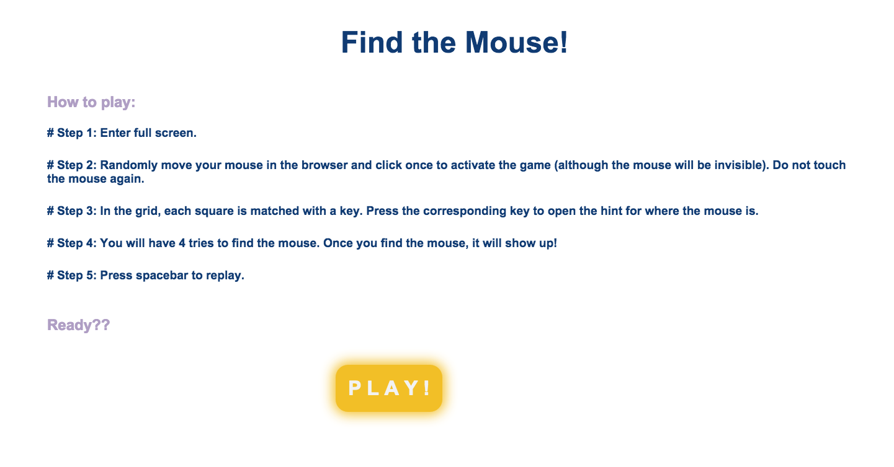
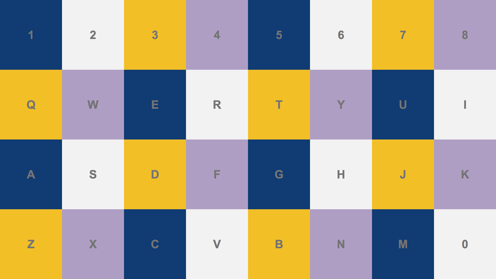
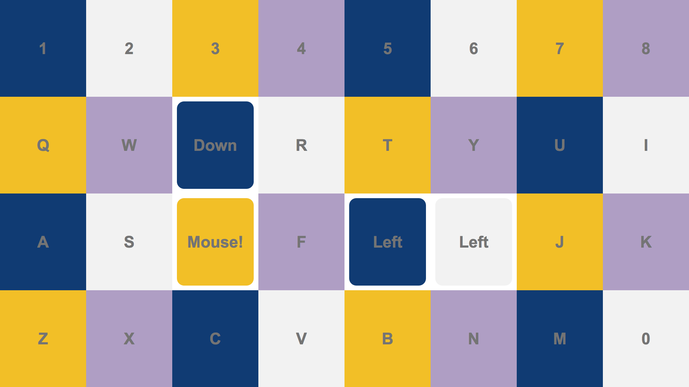

Find the Mouse
2014
Find the Mouse is a simple web game, in which the player has to find the “invisible” mouse cursor with the clues inside of the small squares that cover the entire screen of the browser. Each square contains a character from the keyboard, such as “A”, “B”, “C”… The player presses the corresponding keys to the characters to open the clues inside. There are four types of clues: up, down, left and right, for the relative mouse position. The player has to find which square contains the mouse by following these clues with limited chances.
  It's a little buggy but try it out HERE